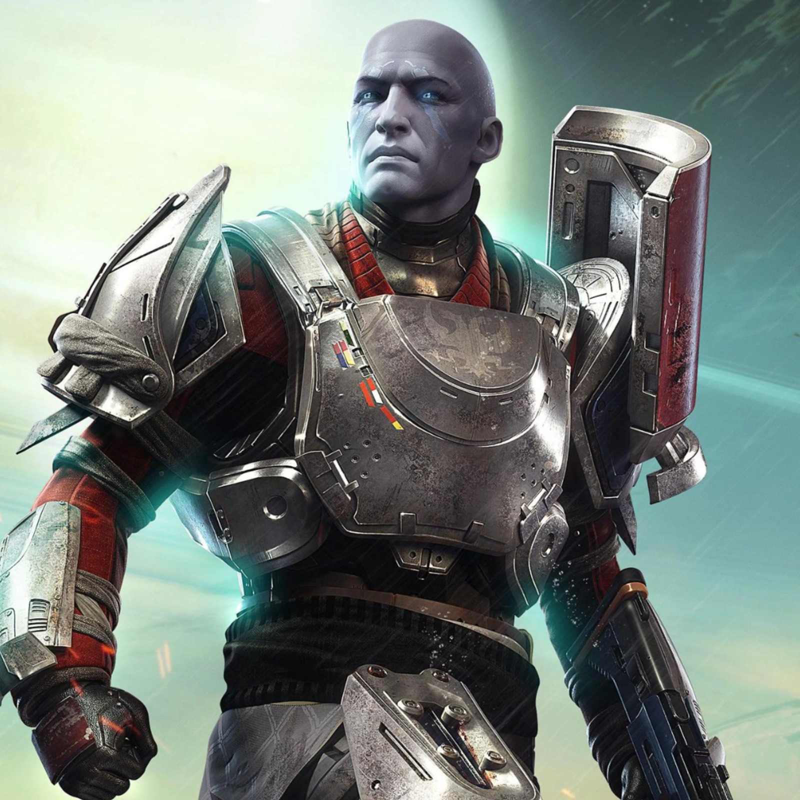

Cayde-6

O Comandante Zavala é o rígido líder da Vanguarda dos Titãs na Torre.Esse Guardião Desperto atua como o comandante-geral das forças da Última Cidade.Ele prioriza o dever, a disciplina, a estratégia e a segurança de todos.Sua firmeza foi muito testada com a perda de Cayde-6 e da Luz.O personagem passou por uma marcante troca de dublagem após a morte de Lance Reddick.Ele segue como o pilar central na defesa da humanidade contra a Testemunha.